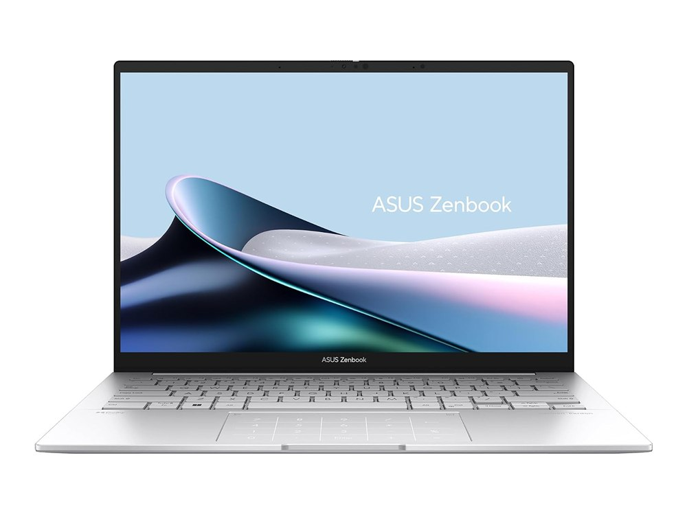

Ficha técnica
| Procesador | Intel Core Ultra 7 155H |
|---|---|
| Gráficos | Intel Arc integrada |
| Memoria | 16 GB LPDDR5X |
| Almacenamiento | 1 TB SSD |
| Pantalla | 14" OLED 3K · 120 Hz |
| Peso | 1,22 kg |
| Autonomía | 12 h según el fabricante |
| Sistema operativo | Windows 11 |
| Precio | 1099 € orientativo |
Para quién es
Su mejor baza es la portabilidad, con 94 de 100. Para jugar se queda en 48 de 100. Con 1,22 kg es el 4.º más ligero de los 34 modelos. Cuesta 1099 €, en la mitad de la tabla de precios.
- Encaja si lo que más te importa es llevarlo encima a diario, y el presupuesto llega a 1099 €.
- Busca otra opción si lo que prima es el gaming: aquí saca 48 de 100.
Puntos fuertes y débiles
A favor
- Ligero: 1,22 kg, el 4.º más ligero de los 34 modelos.
- Pantalla de gama alta: 14" OLED 3K · 120 Hz.
- Almacenamiento amplio: 1 TB.
- Nota alta para trabajar: 90 de 100.
En contra
- Su apartado más flojo: el gaming, con 48 de 100.
Dónde comprarlo
El precio cambia a menudo y puede haber varias configuraciones: comprueba procesador, memoria y almacenamiento antes de comprar.
Ver precio actual en AmazonComo afiliado de Amazon, ComparaPortátil obtiene ingresos por las compras adscritas que cumplen los requisitos aplicables. No cambia lo que pagas ni las notas del comparador.
Notas por uso
Escala de 0 a 100. En el comparador se recalculan según el perfil que elijas. La nota global es 80 / 100, la media de los cuatro apartados.
Alternativas por precio
Los tres modelos del catálogo que más se acercan a su precio:
- ASUS TUF Gaming A15mismo precio
- Lenovo LOQ 15IRX10mismo precio
- MacBook Air 13" (M4)+100 €
Rival directo: MacBook Air 13" (M4)
Es el modelo del catálogo más cercano en precio que también destaca para moverse. Ver la comparativa completa.
| ASUS Zenbook 14 OLED | MacBook Air 13" (M4) | |
|---|---|---|
| Precio | 1099 € | 1199 € |
| Peso | 1,22 kg | 1,24 kg |
| Autonomía | 12 h según el fabricante | 18 h según el fabricante |
| Nota para moverse | 94 / 100 | 95 / 100 |
| Nota global | 80 / 100 | 79 / 100 |
Preguntas frecuentes
¿Sirve el ASUS Zenbook 14 OLED para jugar?
No es su punto fuerte: 48 de 100 para jugar, con gráfica integrada (Intel Arc integrada). Sirve para juegos sencillos o en la nube.
¿Cuánto dura la batería del ASUS Zenbook 14 OLED?
12 horas según el fabricante. Esa cifra se mide con brillo bajo y tareas suaves; con uso normal, cuenta con algo más de la mitad.
¿Es buena opción para llevarlo a clase o al trabajo cada día?
Sí. Con 1,22 kg se lleva en la mochila todos los días sin notarlo.
Compáralo con otro modelo
Abre el comparador con este portátil ya cargado y enfréntalo a cualquiera de los 34.
Abrir el comparadorGuías relacionadas
- Mejor portátil para estudiar por menos de 800 €
- MacBook o Windows: cuál elegir según tu presupuesto
- Mejor portátil ligero por menos de 1,4 kg